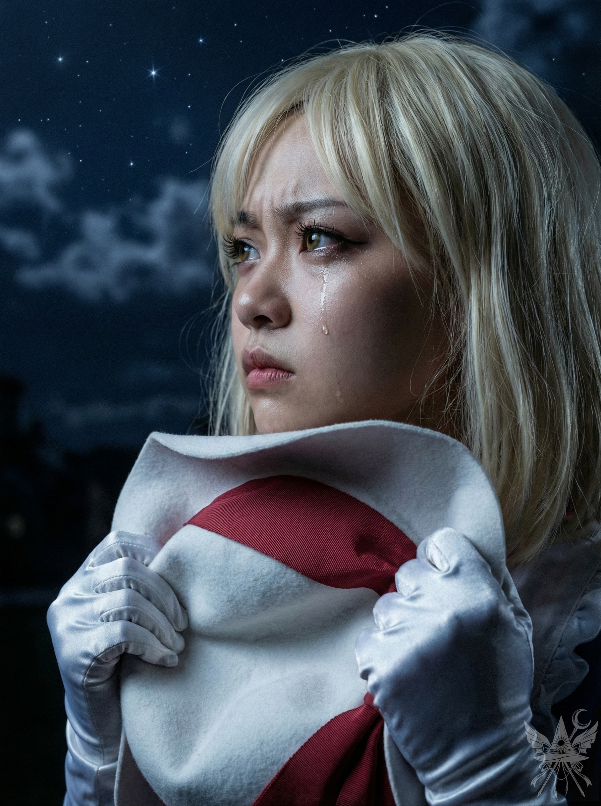
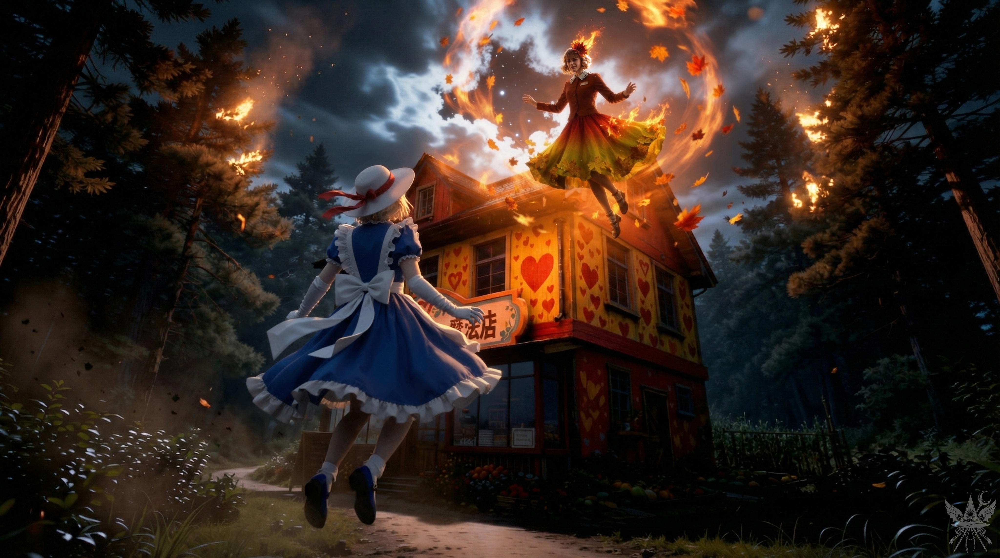

第92章 アンドロメダ（サイドストーリー）

また失敗した。
早く逃げなければ。一刻も早く、あの忌々しい菊界から。
また負けた。私って、本当に愚かで惨めだ。
英雄は称えられる。キクリとコンガラは今頃、あの英雄気取りの連中に勲章でも与えて、いい気になっているのだろう。
いや、別に羨ましくなどない。名声や賞賛なんて、どうだっていい。ただ、私は確かにここにいる。何者でもない、ただのポルターガイストなんかじゃない。それを証明したかっただけなのに。こんな些細な願望すら、叶わないなんて。
エレンは今頃、あの静葉と睦み合っているのだろうか。コンガラはもう、私の言うことなど聞かない。月の姉妹は私を殺そうとしているし、神綺はもう二度と、私に微笑んでくれることなんてない。
そもそも、何で私はあんな奴らのことばかり考えているのか。周囲の反応がそんなに大事なのか。いいや、違う。絶対に違う。あんな連中、皆まとめて消えてしまえばいい。私の帽子のリボンほどの価値もない。私は、自分がただの役立たずなポルターガイストなんかじゃないってことを、必ず証明してみせる。そのためなら、手段なんて選ばない。自分を売り込む？ まさか。そんなみみっちい真似はしない。私は選ばれた特別な存在であり、世界は私のために回っているのだ。私が、この世界の主人公になる。幻想郷の能無し三姉妹も、ヒステリックな静葉も、もうどうでもいい。もっと上を目指すのよ、カナ。
聞いてるかしら、創造主だか神だか悪魔だか妖怪だか知らないけれど。私がこれから、思い知らせてやるから。
｟誰がそんなことを決めた？｠
誰だ。私に口答えするつもりか。それとも邪魔するつもり？
はあ……自分で勝手に役割を決めて、それを自分だと信じ込んでいる。よくやったわ、カナちゃん。それで、次はどうする気？ どこへ行くつもりなの？ 家？ 誰があんたを待っているというの？
＊＊＊
パステル調の壁紙と雑多な小物が並ぶ、薬草の匂いが漂う暖かな空間。
「回復薬、二つね！ はい、お代はちょうど千文！」
小さな袋に小瓶を入れ、お決まりのリボンを結んで手渡した。
九本のふさふさとした尻尾を揺らす女性客は、微笑んで代金を払い、足早に店を出て行った。
「ねえエレン、その回復薬の作り方、教えてくれない？ 人間の里で農薬中毒が流行っているらしくて、その薬のレシピがあれば役に立つと思うのだけれど」
店の奥から、滞在中の秋静葉が声をかけてきた。
「うーん、シズにゃん、それは困るなぁ。レシピ教えちゃったら、お店、潰れちゃうもん！ それより、里の人たちに煎じ薬を買ってもらうのはどう？ たーくさん作れるし、お値段も勉強するよ！」
「わかったわ。それなら、手伝う」
植木鉢に水をやりながら、カウンターに近づく。
「うーん……でも、一人でも大丈夫だから……」
「でも、あの時、エレンのこと……」
静葉が言葉を続けようとした瞬間、空気が一変した。
「静葉。確かに、私はあなたよりずっと若い。でもね、この二百三十三年、私には感情がないの。話を聞いてあげたり、応援したりはできる。でも、静葉の気持ちには応えられない。私には感情がないから。それに、静葉が本当に求めているのは、私じゃない。あなたは失恋の痛みを、私で埋めようとしているだけ……。もし、その愛が本物なら、消えたりしないわ」
勢いよく扉が開かれ、冷たい夜風と共にカナ・アナベラルが店内に踏み込んできた。帽子を直し、二人を振り返る。
「愛は消えたりしないわ。でも、あんたは消えていい。出てって、静葉。ここはあんたの来る場所じゃない」
「カナ！ 久しぶり！ ゆっくりできた？」
静葉から視線を逸らさずに続ける。
「静にゃん、聞こえない？ さっさと出て行かないと、無理やり追い出すわよ」
エレンは静かに告げた。
「カナ、静葉は私の大切なゲストなの。穏便に済ませて」
静葉はすでに出口へと向かっていた。
「エレンさん、お気になさらず。ずいぶん長居してしまいましたし、そろそろ失礼します」
行く手を遮るように立ちふさがる。
「ちょっと待って。そんなに大切なゲストなら、選んでもらおうじゃない。私か、あいつか」
（なんて子どもっぽい……また面倒なことになりそう……）
「アナベラルさん、お願いですから道を開けてください」
静葉の声はひどく冷たかった。
「エレンが選ぶまでどかないわ。素晴らしいほど思いやりのある女神様か、それとも喧嘩っ早い役立たずのポルターガイストか。どっちを選ぶのよ？ それに、どうしてあの男が去ったか知ってる？ 幻想郷から出られないって嘘をつかれたからよ。男を縛り付けようとした、恋に狂った哀れな女の化けの皮が剥がれた時……彼はあんたを笑っただけ」
「よくも……！」
周囲の空気が急速に熱を帯び、暴力的な突風が店内を吹き荒れた。蝋燭の炎が次々と掻き消され、ガタガタと開け放たれた窓から晩秋の容赦ない冷気が雪崩れ込む。
「そう、よく見ときなさい、エレン！ これが私の本性、こんなにも嫌なやつだったのよ！ 気に入った？ それで、静葉、どうするの？ 戦う？」
静葉を見据えたまま、外の闇へと飛び出した。
「私たちのこと、何も知らないくせに！」
夜空へと舞い上がり、熱を孕んだオーラが膨れ上がる。
暴力的な熱波が、頭上の夜気を焼き尽くすように渦を巻く。冷たい空気が悲鳴を上げ、圧倒的な魔力の奔流が重くのしかかってくる。見上げる先で展開されるのは、あまりにも絶望的な力の格差だった。

エレンは肩のソクラテスと共に外へ飛び出し、頭上で繰り広げられる惨劇を見上げた。
降り注ぐ熱線を潜り抜け、肉薄するカナ。
「怒ってんの？ 人殺し。自分自身に腹を立てなさい！ 消えちまえ！ あんたに存在価値なんてない！」
静葉は指を鳴らすと、周囲の松の木から無数の針葉がむしり取られた。それは瞬時に炎の矢と化し、容赦なく群がっていく。
回避する術もなく、冷たい地面に叩きつけられた。
「絶対に……許さない……！」
燃え盛る松葉の檻の中で、真上から見下ろす。
「あんたの許しなんていらない。連れていくだけ」
カナは跳ね起き、炎の壁を突き破って突進した。
二つの影はもつれ合いながら地面に倒れ込んだ。二人のドレスは燃え上がり、輝きを失っていった。
＊＊＊
（また負けたの……？ 何度目かしら……。結局、私の人生には意味なんてなかったの……？）
｟意味なら、いつでもそこにある｠
（なぜ私を、千年も前に神にしたのですか。いっそあの時、死なせてくれればよかったのに。この千年の苦しみは、一体何のためだったのですか。大女神様……どうか、教えてください……！）
｟誰かが……私を呼んでいる……？｠
猛烈な熱波が肌を焼き、エレンは炎に包まれた二人に近づくことができない。焦燥だけが静かに胸の奥底で燻る。
（こんな運命……ひどいわ。大女神様、どうして私の感情を奪ったの。もし、感じることができたなら……二人を止められたのに……）
｟三人が私を何度も呼んでいる。……答えなければ｠
頭の中に、圧倒的な質量を持った声が直接響いた。
「エレン。この二人を助けたいの？」
「大女神様……やっと来てくれたのね。私にできること、何かある？」
「あなたの愛する心……アナーハタ・チャクラを、再び開いてあげましょうか」
「そんなことしたら……死んじゃうの？」
「すぐには死なないわ。ただ、人間に戻るだけ。それを望むの？ 死が怖くない？」
「ええ。……やっと、蘇るのね。この胸に……愛という温もりを」
「ならば……生きなさい。愛する心は、もう開かれたわ。賢く使いなさい」
凍りついていた時間が溶け出すように、二百四十五歳の魔女の瞳から大粒の涙がこぼれ落ちた。もはや熱さなど感じない。エレンは躊躇いなく燃え盛る炎の中へ飛び込むと、炭化しつつある二人の体を強く抱きしめ、嗚咽を漏らしながら囁いた。
「愛してる……」
どこからともなく立ち込めた緑色の濃霧が、狂乱の炎を静かに鎮めていく。焼け焦げた匂いと湿った土の冷たさの中、三人は倒れ伏したまま身動き一つしない。心臓だけが同じリズムで微弱に脈打ち、その意識は遠く離れた彼方へと沈み込んでいた。
＊＊＊
「久しぶりね、お秋。……私のことを覚えているかしら？」
「はい……私を、あの世へ導いてくださるのですね……？」
「本当に、それを望んでいるの？」
「この世界には、もう私の居場所なんてない……。いっそ、このまま消えてしまいたい……」
「いいえ、そうではないわ。静葉、あなたは心の底でいつも生きたいと願っていた。……だから、もう一度やり直す機会を与えましょう」
「ありがとうございます。……あの、お名前を伺っても、よろしいですか？」
「……天照」
＊＊＊
「カナ・アナベラル。初めまして」
澄んだ鈴の音のような声が、漆黒の虚無に響き渡る。
「あんた、誰よ？」
振り返ると、圧倒的な質量を伴う眩い光の塊が静かに接近してくる。その中心から放たれる気配は、すべてを見透かすように穏やかだった。
「あなたの望みを叶えるために来たの」
「へぇ、そう？ 金も名声も愛もいらない私に、本当に欲しいものをくれるって言うわけ？」
「ええ、約束するわ。今日、三人の心の奥底からの願いが、私をここに呼び寄せた。その声に応えなければ、気が済まなかった」
「ほぉ、面白くなってきたわね。で、あんたのこと、何て呼べばいいの？ まさか、ただの幻じゃないわよね？」
「人々は私を、天照と呼んでいたわ」
「天照大御神！？ ちょっと待って。千年も前に、お秋って娘を騙して生贄にしたのは、あんたってこと！？」
「ええ、カナ。その通りよ。今でも後悔しているわ。でも、もうどうすることもできなかった。あなたは賢い子ね」
「三人ってことは、もう一人はエレンでしょ？ つまり、二百年以上も前にエレンのアナーハタ・チャクラを閉じたのも、あんたってわけ？」
「そう。それも分かっていたのね。どうやらあなたを甘く見ていたわ、カナ」
「でも、なんでそんなことするの？ なんで私たちの人生に勝手に踏み込んでくるのよ」
「あなたたちの苦しみを和らげたかった。それだけよ。人が苦しむのを見るのは耐えられない。あなたたちの銀河系には、肉体やアストラル体では直接行けないから、遠くから見守ることしかできなかった。でも、もう見ていられない。……カナ・アナベラル、あなたは人生に何を望むの？」
「そんなの簡単よ。この世界の歴史、つまり宇宙のすべてを、この手で動かしたいの」
「それなら、ついてきなさい。あなたに見せたいものがある。それを見たら、もう元の世界で大人しくなんてしていられない。きっと、世界を変えずにはいられなくなるわ」
「は？ 別に今までだって大人しくしてたつもりはないんだけど」

視界が反転し、真の闇が広がる。絶対零度の真空の冷たさと、目の前に顕現した恒星の如き巨大な熱量。人間の理屈を超越した黄金の光の奔流が、渦巻く紫と青の星雲を背にして、静かに右手を差し伸べていた。音のない轟音が脳髄を揺らす。
「ようこそ、アンドロメダ銀河へ。ここは私の故郷、私の世界よ」
直接脳内に語りかけてくる声。
「私の民が暮らす場所なの。数千年前、私はあなたたちの星、地球を訪れ、人類の創造に少しだけ関わったわ。遺伝子操作はほんの僅かだったけれど、主に文化――私たちに似た文化――の形成を手伝ったの」
光に導かれるまま、意識は無数の星々を跳躍していく。青白く輝く巨大な恒星系。地球に酷似した環境を持つ六つの惑星群。その地表に広がるのは、自然と魔法、高度な科学技術が完全に調和した都市の姿だった。労働の概念はとうに消失し、人々はただ己の創造性の赴くまま、芸術や魔法に没頭し、争いを知らぬ穏やかな時を生きている。
決して停滞した世界ではない。彼らは遠い星々へ旅立ち、あるいは仮想の舞台で戦士や独裁者といったあらゆる役割を演じて遊戯に興じている。「死」という概念そのものが存在しないのだ。肉体が滅びようとも、すぐに新たな器へと魂を移し替えることができる、完全なる永遠。
（何なの、これ。夢？ それとも……これが、理想郷？）
圧倒的な美しさと完成されたシステムを前に、得体の知れない恐怖で魂が震えた。
（今まで見てきた世界は何だったの。こんな世界が……本当に存在するなんて！）
「……つまり、私たちの世界は、間違っていたんだわ。別の生き方が……あったんだ」
「その通りよ、カナ。あなたたちを家畜や操り人形に変え、内なる神の輝きを奪ったシステムを破壊しなさい」
声は厳粛な響きを帯びる。
「もうこれ以上、あなたを助けることはできない。アンドロメダへの扉を開いたことで、天の川中央庁のレーダーに感知されているかもしれないから。これからは知識があなたの武器よ。彼岸にある閻魔大審議会という組織から始めなさい。あの仕組みはよくわからないけれど、閻魔のせいで人々は前世の記憶を奪われ、永遠の無知の闇に囚われている。カナ、あなたは真実を知った。その真実を胸に、諦めずに戦いなさい。さらば」
意識が急速に現実に引き戻される。焦げた匂いの立ち込める地面の上で、カナの腕の中でエレンがゆっくりと目を覚ました。その瞳からは止めどなく涙が溢れている。周囲を見渡しても、静葉の姿は跡形もなく消え去っていた。
（エレンには、アンドロメダの話はしないでおこう）
人間に戻り、感情を取り戻したばかりの彼女に、これ以上の真実を突きつけるのは酷だ。
（……人間に戻ったってことは、エレンはいつか死ぬってこと？ この世界から死そのものを消し去らない限り、エレンは、いなくなってしまう？）
見慣れた屋根裏部屋に戻り、冷たい思考を巡らせる。
（……でも、どうすれば）
その時、古びた階段を軋ませて上がってくる、メデアの足音が聞こえた。
[SYSTEM ALERT: 音響兵器デプロイ完了]
▼ 本章の絶望を1000%味わうための専用聴覚データ ▼
■ YouTube：『Re:Noise（リ・ノイズ）』
[Full Video]
[Short Video]